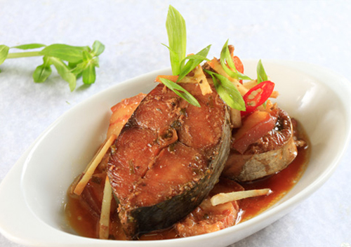

Cá kho riềng

- Khẩu phần 4
- Chuẩn bị 15 phút
- Thực hiện 25 phút
Nguyên liệu
- Cá chép, rửa sạch với nước cốt chanh, cắt khúc
- 200g thịt ba chỉ, rửa sạch, cắt miếng nhỏ vừa ăn
- 1 củ riềng, gọt vỏ, rửa sạch, cắt sợi
- 200ml nước trà xanh
- Tiêu xay, ớt
- Gia vị: 1 gói Gia Vị Hoàn Chỉnh - Cá Kho
Riềng cho món cá kho ngon đúng điệu
Hướng dẫn thực hiện
- Dùng gói Gia Vị Hoàn Chỉnh - Cá Kho Riềng ướp cá chép trong 15
phút cho ngấm gia vị
- Sắp vào nồi lần lượt 1 lớp riềng, một lớp thịt, một lớp cá và một lớp
riềng trên cùng. Thêm nước trà xanh vào cho xăm xắp mặt cá
- Bắc nồi lên bếp, đun to lửa cho nồi cá sôi, sau đó vặn nhỏ lửa kho cá
khoảng 45 phút cho cá chín
- Cho cá ra dĩa, trang trí với ớt, rắc chút tiêu xay. Dùng nóng với cơm